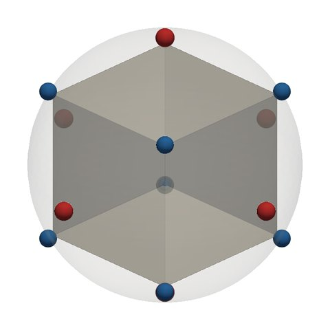
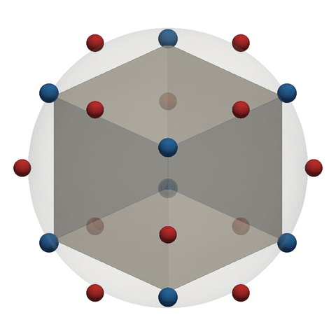

Compare recipes¶
Choose a solid and a recipe on each side to see where each recipe puts its zeros (blue) and poles (red). The two views share one orientation: drag either one to turn both. Scroll or pinch to zoom. Hover over or tap a marker to see its order and the cell it stands for.
The interactive comparison needs JavaScript and WebGL. Below is its default view, as still images: the cube under R2 and under R4ve. Every solid and recipe is drawn in the comparison atlas.


zeros (pits) poles (spikes). Markers grow with order; in the interactive view both sides share one size scale, so equal orders give equal markers.
What is shown. Each marker is a point of the recipe's divisor, at the direction of the cell it stands for: a vertex, a face's outward normal, or the foot of the perpendicular to an edge (the recipes). Orders are unreduced by default, as the recipes are defined. If a solid's orders share a common factor, the summary says so, and Reduce by gcd divides it out. The points stay the same; only the orders, and so the marker sizes, change. The solids are scaled to circumradius 1, and the data is computed from the same code as the rest of the site when the site is built.
Comparisons to try¶
With the interactive view running, each name below loads that pair.
- . The zeros are the same. R4ve moves the poles from the faces to the edges.
- . The two halves of R2: for unreduced divisors, \(D_{R2} = D_{R4ve} - D_{R4fe}\), and the edge poles cancel.
- . Polar duals: the zeros and poles swap places, so one function is the reciprocal of the other.
- . The same points. On the cube, R1's orders are exactly twice R2's; tick Reduce by gcd to see that they give the same function.
- . The same points again, but the apex has valence 6 and the base vertices 3. R2 weights them differently, while R1 does not.
- . A solid without symmetry. Its vertices have valences 3, 4 and 5, and its faces 3, 4 and 5 sides, so R2's markers vary in size. R4ve's 18 edge poles all have order 2.